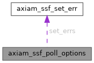

|
AXIAM C SDK 1.0.0
C11 client SDK for AXIAM (CONTRACT.md §1-§7, §9-§11, §13 incl. §6.1 mTLS)
|
Arguments to axiam_ssf_poll(). More...
#include <ssf.h>

Data Fields | |
| long | max_events |
maxEvents — the server clamps it to 100; 0 acknowledges and returns nothing. | |
| int | has_max_events |
1 sends max_events. | |
| int | return_immediately |
returnImmediately — without it the server long-polls up to 30 s. | |
| int | has_return_immediately |
1 sends return_immediately. | |
| const char *const * | ack |
ack — the jtis you PROCESSED since the last poll. | |
| size_t | ack_count |
| const axiam_ssf_set_err_t * | set_errs |
setErrs — the jtis you refuse. | |
| size_t | set_errs_count |
Arguments to axiam_ssf_poll().
Every member is passed through as given; an unset one is not sent. All pointers are borrowed for the call.
| long axiam_ssf_poll_options::max_events |
maxEvents — the server clamps it to 100; 0 acknowledges and returns nothing.
| int axiam_ssf_poll_options::has_max_events |
1 sends max_events.
| int axiam_ssf_poll_options::return_immediately |
returnImmediately — without it the server long-polls up to 30 s.
| int axiam_ssf_poll_options::has_return_immediately |
1 sends return_immediately.
| const char* const* axiam_ssf_poll_options::ack |
ack — the jtis you PROCESSED since the last poll.
Non-NULL sends the array (an empty one when ack_count is 0); NULL omits it.
| size_t axiam_ssf_poll_options::ack_count |
| const axiam_ssf_set_err_t* axiam_ssf_poll_options::set_errs |
setErrs — the jtis you refuse.
Non-NULL sends the object (an empty one when set_errs_count is 0); NULL omits it.
| size_t axiam_ssf_poll_options::set_errs_count |